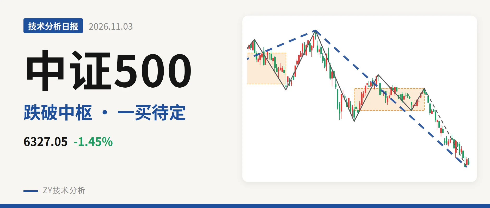
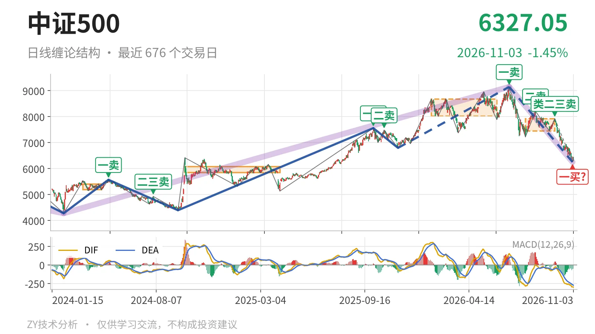
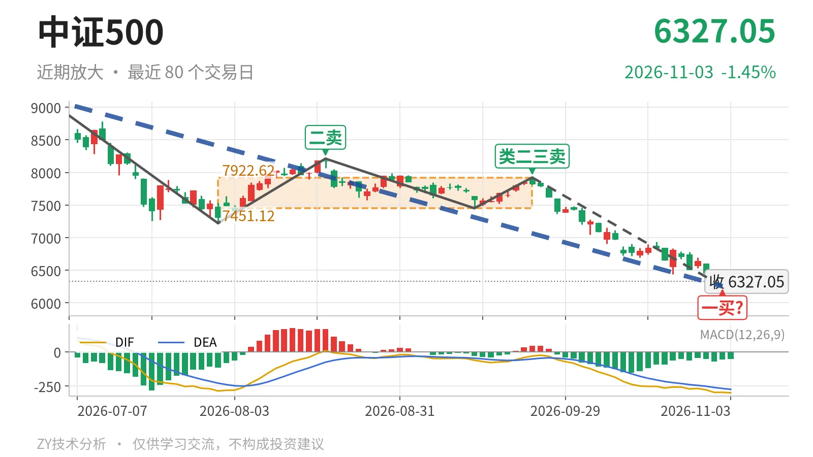

中证500｜跌破7451中枢，一买暂定看6263

最近日线中枢 7451.12—7922.62点，收盘位于中枢之下
一句话：日线仍弱，6253点一买暂定，反抽看7451点
📉 走势结构：7月1日以来的日线下跌段还在延续
当前处于日线下跌段。7月1日出现一卖9147.56点，8月18日二卖8211.31点、9月22日类二三卖7922.62点，一个比一个低。这决定7月1日至11月2日的日线下跌线段没有结束，该线段内含5笔，低点至6253.79点。更大级别上，这是针对2024年2月5日至2026年7月1日上涨段的回撤，价格已经回到2022年4月27日至2023年8月4日线段中枢上沿6263.16点附近。

🧭 中枢位置：价格在最近中枢下方约15.1%
最新收盘6327.05点，低于7月30日至9月22日日线中枢下沿7451.12点约15.1%。该中枢区间为7451.12—7922.62点，较1月26日至6月8日的8014.66—8671.35点明显下移。9月22日反抽到7922.62点，触及上沿后没有站稳，随后继续向下。最新DIF为-298.6，在零轴之下，绿柱未收敛。反抽若回不到7451点上方，结构上构成三卖。
🎯 买卖点：11月2日一买只是暂定
11月2日低点6253.79点是暂定的日线笔一买，因为所在的9月22日至11月2日下跌笔还在延续。11月3日最低6292.31点，未破6253点，暂定一买尚未被破坏。若该笔继续下探，这个一买会随笔的延伸而变化。2025年11月24日的线段级别三买6797.50点已被7月1日以来的下跌段跌破，2025年11月24日至2026年7月1日上涨段的结构已被破坏。

📊 背驰：绿柱面积收缩，DIF仍创新低
9月22日以来这笔下跌，较7月1日至7月30日那笔价格创了新低。7月1日至7月30日绿柱面积2687，DIF低点-285.2；9月22日以来至11月2日绿柱面积1782，DIF低点-295.6。绿柱面积不新大，但DIF低点继续下移，不是标准底背驰。当前下跌笔还在延续，面积和DIF都不是终值，背驰只能暂看。
🔍 关键位置观察：6253—6263点与7451点决定结构强弱
结构仍弱，弱在价格位于最近中枢下方、中枢下移、DIF零轴下且低点下移。6253点与线段中枢上沿6263点几乎重叠，形成6253—6263点一线。守住6263点附近，下跌只是回到线段中枢上沿；跌破6253点，暂定一买破坏，日线下跌段继续向下离开中枢。反抽若不能回到7451点上方，构成三卖；重新站上7451点，则中枢跌破更可能转为中枢扩展，偏弱格局才会缓和。结构状态：偏弱。
⚠️ 本文为基于公开行情数据的缠论技术结构记录，由程序自动计算并生成，仅供学习交流，不构成任何投资建议。市场有风险，投资需谨慎。